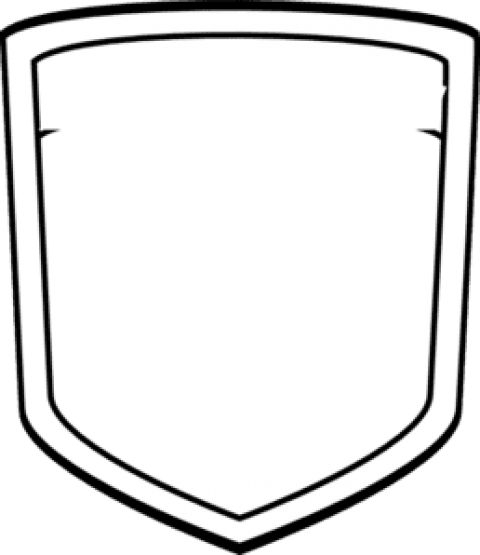

[ Македонски ]
[ Shqip ]
[ Castellano ]
[ English ]
@zfudbalmk
×
Ballina
Garat ▾
Kupa e RM për Femra 25/26
Liga e Parë e Femrave 25/26
Liga e Dytë e Femrave 25/26
Liga e të Rejave 25/26
Liga e Kadeteve 25/26
Arkiva
Kombëtarja
Futbolliste
Klubet
Rreth
Kërko

Fk Baškimi Ljuboten/Žfk
STADIUMI
Igralište Jovan Mandarovski
Skuadra
Orari
Sezoni
17/18
Kategoria
Sezoni
17/18
Kategoria